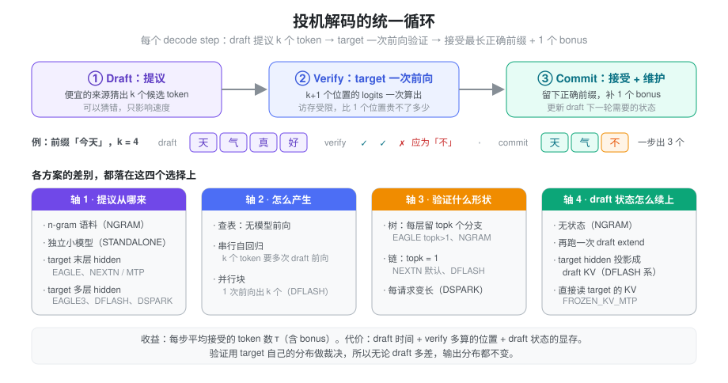
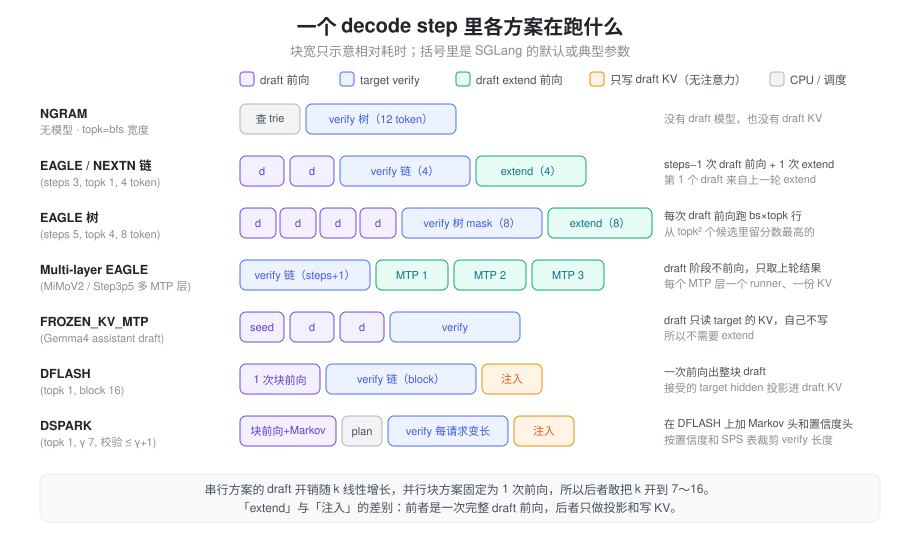

问题：decode 一步只出一个 token
自回归 decode 每一步只为每个请求生成 1 个 token，但这一步要把全部权重、整段 KV 从 HBM 读一遍。小 batch 下 GPU 的算力大部分闲着，步时间几乎全花在访存上（见 Roofline）。这带来一个直接的推论：让 target 在一次前向里多算几个位置，步时间几乎不变。
难点在于下一个 token 依赖上一个 token，target 自己没法一次「往前多走几步」。投机解码的做法是找一个便宜的来源先猜出后面 k 个 token，再让 target 用一次前向把这 k 个位置一起检查掉。猜对几个，这一步就多出几个；猜错了，最多白算几个位置，结果仍由 target 决定。
所以问题变成两个：
- 猜什么、怎么猜才又快又准：猜得越准，一步接受的 token 越多；猜的代价越低，净收益越大。
- 猜完之后怎么收拾：被拒绝的 token 已经写进了 KV，draft 自己也有状态，要能低成本地对齐到「真正被接受的前缀」上。
SGLang 里的 NGRAM、STANDALONE、EAGLE / EAGLE3 / NEXTN、FROZEN_KV_MTP、DFLASH、DSPARK，都是这两个问题的不同答案。
抽象：draft → verify → commit

所有方案共享同一个三段式循环：
- Draft：draft 给出 k 个候选 token。可以是一条链，也可以是一棵树。
- Verify：target 对「上轮的 bonus token +
k 个候选」做一次前向（SGLang 里叫
TARGET_VERIFY），一次拿到 k+1 个位置的 logits。 - Commit：从头比对，接受最长的正确前缀，再用 target 在第一个错误位置上的输出补 1 个 bonus token。这样即使 k 个全错，这一步也照样产出 1 个 token，不会比不投机更慢（不计 draft 开销）。
为什么结果不受 draft 影响
每个位置最终留下的 token 都由 target 的分布裁决，draft 只决定「哪些位置值得算」。
- greedy：target 的 argmax 和 draft
相同就接受，否则用 argmax 替换并停止。结果和不投机的逐 token
greedy 完全一致。SGLang 用
verify_tree_greedy实现，链是树的特例。 - 采样：SGLang 默认走
tree_speculative_sampling_target_only，只用 target 的概率做接受判断（draft 概率传 0），阈值由--speculative-accept-threshold-single/-acc控制，默认都是 1.0。打开--speculative-use-rejection-sampling后改用经典的 draft/target 概率比拒绝采样（chain_speculative_sampling_triton），这条路径要求 topk = 1。
收益怎么算
衡量 draft 质量的核心指标是平均接受长度
τ：每次 verify 平均每个请求产出多少 token，含
bonus。SGLang 的 spec_accept_length
就是它，范围是 [1, k+1]。粗略地说：
\text{加速比} \approx \frac{\tau \cdot T_{\text{step}}^{\text{plain}}}{T_{\text{draft}} + T_{\text{verify}} + T_{\text{commit}}}
分子靠 draft 猜得准，分母靠三件事压低：draft 本身要便宜；verify 多算的 k 个位置在访存受限时几乎免费，但 batch 一大就开始真实占算力；commit 阶段维护 draft 状态的开销。
这也解释了一个普遍现象：投机解码在小 batch 收益大，大 batch 收益小。batch 越大，verify 越接近算力受限，多算的位置不再免费。SGLang 的 adaptive 模式和 DSPARK 的变长 verify 都在处理这个问题。
四个设计轴
前面那张图的下半部分把各方案拆到四个轴上。看懂这四个轴，各方案就只是不同的组合：
| 轴 | 问的是什么 | 取值 |
|---|---|---|
| 提议从哪来 | draft 依据什么信息猜 | n-gram 语料；独立小模型；target 末层 hidden；target 多层 hidden |
| 怎么产生 | k 个 token 要几次前向 | 查表（0 次）；串行自回归（约 k 次）；并行块（1 次） |
| 验证什么形状 | target 一次验多少、什么拓扑 | 树（每层 topk 个分支）；链（topk = 1）；每请求变长 |
| draft 状态怎么续上 | 接受后 draft 的 KV / hidden 如何对齐 | 无状态；再跑一次 draft extend；target hidden 投影成 draft KV；直接读 target 的 KV |
两个轴之间有张力：
- 信息越多越准：用 target 的 hidden 比用 n-gram 准得多，用多层 hidden 又比只用末层准。但这些信息只在 target 前向之后才有，draft 必须跟在 target 后面。
- 串行越准，并行越便宜：自回归 draft 每个位置都看得到前一个猜的 token，越往后错得越慢；但 k 个 token 就要 k 次前向，k 很难开大。并行块一次前向出整块，k 可以开到 7～16，代价是块内位置互相看不到彼此的取值。
串行 draft：从 n-gram 到 MTP

NGRAM：不要模型，查历史
最便宜的猜法是「这段话前面出现过的接续，后面多半还会出现」。代码补全、RAG 回答、改写这类任务里，输出大段复制输入，这个假设很准。
NGRAM 取每个请求最近 max_trie_depth（默认
18）个 token，到一棵 trie 里查后续，按 BFS
展开成一棵候选树，宽度在
--speculative-ngram-min/max-bfs-breadth（默认
1～10）之间，默认 12 个 draft token。verify
结束后，把这段窗口插回 trie。trie
是所有请求共享的，所以别的请求生成过的片段也能被命中。还可以预加载外部语料（JSONL，建成后缀自动机），运行时用
POST /add_external_corpus 追加。
它没有 draft 模型，也就没有 draft
KV（has_draft_kv() 为 False），树只存在于
verify 的 attention mask
里。代价是在开放式生成上几乎猜不中，而且不支持 DP
attention。
STANDALONE：一个独立的小模型
经典的投机解码：拿同系列的小模型（比如 1B 配 70B）当 draft，自己有 embedding、lm_head 和 KV，不读 target 的任何中间结果。词表必须和 target 一致。
它的问题是小模型只看得到 token，看不到
target「此刻在想什么」，准确率有限；而且小模型本身也有好几层，k
次串行前向不算便宜。在 SGLang 里它复用 EAGLE 的
worker（StandaloneWorkerV2 继承
EAGLEWorkerV2），只是关掉了 hidden
捕获，也不共享 lm_head。默认参数是 (steps 3, topk 1, draft
tokens 4)，不支持 DP attention。
EAGLE：让 draft 读 target 的 hidden
EAGLE 的关键观察是：target 最后一层的 hidden 已经编码了「下一个 token 是什么」的大部分信息，lm_head 只是把它投到词表上。如果 draft 拿到这个 hidden，只需要一层很薄的网络就能猜得很准。
draft 的输入是
fc(cat(embed(token), target_hidden))，后面接 1
层 decoder，再过 target 的 lm_head。embedding 和 lm_head
都直接借用 target
的（set_embed_and_head），draft
自己只有一层的权重。
串行的流程是这样的。第 1 个 draft token 来自上一轮 extend
已经算好的 top-k，之后每一步用上一步 draft 输出的 hidden 和
token 再跑一次，共 num_steps − 1 次 draft
前向。
- topk = 1 时是一条链：k = num_steps 个 token，verify 的长度是 num_steps + 1。
- topk > 1
时是一棵树：每一步每个分支展开 topk
个，候选的累积分数相乘，从 topk² 个里留 topk
个；最后按分数选
num_draft_tokens − 1个节点，加上 bonus 建成树（build_tree_kernel_efficient），用 tree mask 一次验掉。树的好处是第一位猜错时还有兄弟节点兜底，代价是每次 draft 前向要跑 bs × topk 行，verify 也更宽。
verify 之后还要再跑一次 draft（draft
extend）。draft 前向时写下的 KV 和 hidden
沿着猜测的分支走，可能是错的。下一轮需要的是「在真正被接受的
token 上」的 draft KV 和 hidden，所以要用 verify 输出的
token 加 target 的 hidden，对每个请求
num_draft_tokens 个位置再做一次 draft
前向，取第 accept_len − 1
个位置的结果作为下一轮的起点。于是每个 decode step 是：
1 次 target verify + (num_steps − 1) 次 draft decode + 1 次 draft extend
NEXTN / MTP：模型自带的 draft
DeepSeek-V3、GLM-4.5、MiMo、Qwen3-Next
这类模型训练时就带了 MTP（multi-token
prediction）层：一个额外的 transformer 层，输入是
eh_proj(cat(enorm(emb), hnorm(prev_hidden)))，专门预测再往后一个
token。这和 EAGLE 的 draft 结构一模一样，只是和 target
一起训练，接受率通常更高。
所以在 SGLang 里 NEXTN 只是 EAGLE
的别名：_resolve_speculative_algorithm_alias
把 NEXTN 改写成 EAGLE，没有单独的枚举值。对
DeepSeek、GLM、Bailing 等架构，draft 路径自动设成 target
自己的 checkpoint；加载 draft 时
model_config.py 把架构名改写成
DeepseekV3ForCausalLMNextN 之类，只加载
model.layers.{num_hidden_layers}
这一层。DeepSeek 系默认用 (3, 1, 4)，也就是一条 3 个 token
的链。
EAGLE3：读多层 hidden
只看末层 hidden，draft
拿到的是「已经快决定好的」信息。EAGLE3 改成同时取 target
的低、中、高三层 hidden，默认是 [2, L/2, L−3]
层，拼起来过 fc 压回 hidden 宽度。EAGLE3
论文的出发点是：末层 hidden 被训练成只服务于「下一个
token」，中低层保留了更多关于后续内容的信息，draft
往后多猜几步时更不容易掉准。注意 fc
只作用在第一步：之后的 draft 步喂的是 draft 自己输出的
hidden，宽度已经对了。
EAGLE3 的 draft
通常还有一个更小的词表：d2t
映射把 draft 词表的下标翻译回 target 词表，lm_head
只覆盖高频 token，draft 的 lm_head 计算量随之下降。这也是
EAGLE3 默认不共享 target lm_head 的原因。
Multi-layer EAGLE：多个 MTP 层轮流上
MiMoV2、Step3p5 这类模型带了多个 MTP 层，每一步 draft
用一个不同的 MTP 层（Step3p5 的第 i 步加载第
num_hidden_layers + i 层）。SGLang
对它们自动开启 enable_multi_layer_eagle，每个
MTP 层一个独立的 ModelRunner 和 KV。
和普通 EAGLE 的区别在于时间分配：draft
阶段不做前向，只整理上一轮 extend
已经算好的各步 top-k；extend 阶段则依次跑 num_steps 次，每个
MTP 层一次。要求 topk = 1，即
num_draft_tokens = num_steps + 1。
FROZEN_KV_MTP：draft 不写自己的 KV
Gemma4 的 assistant draft 走另一条路：draft 的每一层直接只读复用 target 最后两层（一层 sliding、一层 full）的 KV，自己不分配 KV（draft pool 是一个只有 64 slot 的占位池），前向时也不写 KV。既然没有 draft KV 需要对齐，也就不需要 draft extend：verify 后只把最后一个被接受 token 的 target hidden 留下来，作为下一轮的种子。
用户写 NEXTN 或 EAGLE 时，只要
draft 是 Gemma4 assistant，就会自动升级成
FROZEN_KV_MTP。它复用 EAGLE 的 verify 路径，topk > 1
时要求 triton attention 后端。
并行块 draft：DFLASH 与 DSPARK
串行 draft 的天花板很明显：k 每加 1，就多一次 draft 前向，而且越往后猜越不准，边际收益递减。所以 EAGLE 系通常只开 3～5 步。并行块的思路是把 k 个位置放进同一次前向，让 draft 开销和 k 基本无关，从而敢把 k 开大。

DFLASH：一次前向出一整块
DFLASH 的 draft
输入是一个块：[bonus, MASK, MASK, …]，共
block_size 个位置，MASK 默认是 <|MASK|>
token。draft 在这个块上跑一次前向，full attention 层用
ENCODER_ONLY（块内双向），sliding
层仍然是带窗口的因果注意力。第 1 位往后每个位置的 hidden 过
target 的 lm_head 取 argmax，就得到 block_size − 1 个 draft
token。
draft 需要的「上文」不是靠它自己一步步算出来的，而是从 target 注入的：
- target 若干层的 hidden 拼起来，过
fc和hidden_norm投影；层数只有 1 时取中间层，否则在 [1, N−3] 上均匀取。 - 投影后的结果只做 K/V 投影、k_norm 和 RoPE，直接写进
draft KV（
kv_proj_only→set_kv_buffer_prefix_valid）。不跑 attention，也不跑 MLP。 - prefill 时把整个 prompt 的 target hidden 写进去；decode
每步 verify 后，把被接受位置的 target hidden 按
commit_lens写进去。
所以 DFLASH 没有 draft extend：verify
之后的维护只是一次「投影 + 写 KV」，比 EAGLE 的 extend
前向便宜得多。draft 模型自己也没有 embedding 和
lm_head，只有
fc、hidden_norm、norm
和几层 decoder。
参数上，DFLASH 强制
num_steps = topk = 1（这两个字段对它没有意义，但通用的显存计算会用到），block_size
等于 num_draft_tokens，不指定时从 draft
配置推断，默认 16。限制也比较多：只支持 CUDA，不支持 DP
attention，要求 PP = 1。
DSPARK：补回块内依赖，按置信度验
并行块的弱点在图里已经标出来了：块内各位置的 logits 来自同一次前向，第 3 位不知道第 2 位最后取了什么，越靠后越容易「各说各的」。DSPARK 在 DFLASH 上做了两处补充。
① Markov 头：把「前一个
token」接回来。块前向得到每个位置的基础 logits ℓi
后，再按顺序采样：第 i 位的 logits 加上一个只依赖前一个
token 的偏置
B(t_{i−1}) = W2 · W1[t_{i−1}]，采样出 t_i，再用
t_i 算下一位的偏置（run_markov_block）。W1 是
embedding、W2 是线性层，中间是一个很小的
markov_rank，所以这 γ 步串行只是 γ
次低秩查表，不是模型前向，整个过程被折进 draft 的 CUDA
graph。除了 vanilla 之外还有 gated 和 rnn 两种变体，会额外看
hidden。代码注释里把它称为 semi-AR draft。
② 置信度头 +
planner：每个请求验不一样长。到了大 batch，verify
多算的位置不再免费，给一个第 2 位就大概率出错的请求验满 γ+1
个位置纯属浪费。DSPARK 让 draft
再输出每个位置的置信度，累乘得到「这个位置还活着」的生存概率（用的是滞后
2 步的置信度，见
SGLANG_DSPARK_CONFIDENCE_RELAY_LAG_STEPS）。planner
把全 batch 的生存概率从大到小排开，选一个总预算 k*：
k^* = \arg\max_k \Big(N + \sum_{j \le k} s_{(j)}\Big) \cdot \text{SPS}(N + k)
括号里是「这一步预计产出的 token 数」，SPS
是离线测出来的「batch 里 token 数 →
每秒步数」表（--speculative-dspark-sps-table-path），两者相乘就是预计吞吐。预算按生存概率分给各请求，每个请求的
verify 长度落在 [1, γ+1] 之间，至少验 anchor。
这里用到两张离线表：
- SPS（steps per second）：没有它时表是平的，「多验一个位置」永远不吃亏，预算退化成全部验证，调度收益为零。
- STS（sequential temperature scaling）：对置信度做逐位置的温度校准，让生存概率更接近真实接受率。不校准也不影响正确性。
变长 verify 由 SGLANG_RAGGED_VERIFY_MODE
控制：
| 模式 | target 跑多少位置 | 效果 |
|---|---|---|
static（默认） |
全部 γ+1 | 不裁剪；CUDA graph 形状固定 |
cap-accept |
全部 γ+1 | 接受长度截在计划值上，不省 verify 计算；这个模式下能精确统计「不截断时」的接受长度 |
compact |
各请求 verify 长度之和，补齐到 graph 档位 | 真正省掉 verify 的计算 |
γ 依次取
--speculative-dspark-block-size、checkpoint
里的 block_size，都没有时默认
7，num_draft_tokens = γ + 1。draft 的 graph
宽度是 γ，因为 draft 块是
[bonus, MASK × (γ−1)]，而 verify 是 anchor + γ
个 draft。和 DFLASH 不同，DSPARK 支持 DP attention，PD
分离下也支持 PP，Kimi K3
B200 的部署就用了它。
draft KV 只按窗口分配
DFLASH 和 DSPARK 的 draft 通常是 sliding window
attention，任何时刻只读最近 window 个 token 的 KV。如果
draft KV 跟着 target 按上下文长度分配，长上下文下绝大部分
draft KV
永远读不到。--speculative-draft-window-size
打开后，DraftWindowSlotMap（draft_swa_pool.py）把
target 的 slot 映射到一个按
请求数 × (window + page + γ)
定大小的紧凑池，滑出窗口的 slot
立即回收；draft_window.py 给 draft
提供一个只含「最近 window 个已提交 slot + 当前块」的
req_to_token 视图。K3 上这一改动的显存账见 Kimi K3 B200 的 DSPARK SWA
池。
横向对比
| NGRAM | STANDALONE | EAGLE / NEXTN | EAGLE3 | FROZEN_KV_MTP | DFLASH | DSPARK | |
|---|---|---|---|---|---|---|---|
| 提议依据 | 历史 n-gram | 小模型自己的 token | target 末层 hidden | target 多层 hidden | target hidden + target KV | target 多层 hidden | target 多层 hidden |
| draft 权重 | 无 | 完整小模型 | 1 层（NEXTN 是模型自带 MTP 层） | 1 层 + fc，常带小词表 | assistant 模型 | 几层 + fc，无 embed / head | 同 DFLASH + Markov 头 + 置信度头 |
| 每步 draft 前向 | 0 | steps − 1 | steps − 1 | steps − 1 | steps | 1 | 1（+ γ 次低秩查表） |
| 验证形状 | 树 | 链 / 树 | 链 / 树 | 链 / 树 | 链 / 树 | 链 | 链，每请求变长 |
| 默认 (steps, topk, tokens) | topk = bfs 宽度，12 token | (3, 1, 4) | DeepSeek 等 (3, 1, 4)；Llama (5, 4, 8) | 同 EAGLE | 用户指定 | (1, 1, 16) | (1, 1, γ+1)，γ = 7 |
| draft KV | 无 | 自有 | 自有 | 自有 | 无，只读 target 的 | 自有，可按窗口 | 自有，可按窗口 |
| verify 后维护 | 插回 trie | draft extend 前向 | draft extend 前向 | draft extend 前向 | 只留种子 hidden | 投影写 KV | 投影写 KV |
| 主要限制 | 开放式生成命中率低；不支持 DP attention | 不支持 DP attention | — | 需要专门训练的 draft | 仅 Gemma4 | 仅 CUDA；无 DP attention；PP = 1 | 需要专门训练的 draft |
怎么选，大致看三件事：
- 模型有没有自带 draft。带 MTP 层的模型（DeepSeek、GLM、MiMo、Qwen3-Next）直接用 NEXTN，不需要额外训练；Gemma4 配 assistant 就自动走 FROZEN_KV_MTP；有现成 EAGLE3 / DFLASH / DSPARK 权重的再考虑它们。
- batch 有多大。小 batch 时 verify
多算的位置几乎免费，树（topk > 1）和大 block
都划算；batch 越大越应该收窄：EAGLE 用 topk = 1
的链，或者打开
--speculative-adaptive；DSPARK 用compact模式让 planner 自己裁。 - 输出和输入的重合度。代码编辑、长文改写这类大段复制的场景，NGRAM 不用任何模型就能拿到很高的接受长度。
实现：共享的骨架
所有算法通过
SpeculativeAlgorithm（speculative/spec_info.py）分派。这个枚举只有
DFLASH、DSPARK、EAGLE、EAGLE3、FROZEN_KV_MTP、STANDALONE、NGRAM
和 NONE，NEXTN 在参数解析阶段就被改写成了 EAGLE。
- 参数处理：
handle_server_args按算法调用arg_groups/speculative_hook.py里的_handle_eagle_family/_handle_dflash/_handle_dspark/_handle_frozen_kv_mtp/_handle_ngram，补默认值、强制约束。EAGLE 系的默认参数来自_auto_choose_speculative_params，按架构名查表。 - worker：
create_worker返回各自的 worker 类，EAGLEWorkerV2、MultiLayerEagleWorkerV2、StandaloneWorkerV2、FrozenKVMTPWorkerV2、DFlashWorkerV2、DSparkWorkerV2、NGRAMWorker。名字里的 V2 指 overlap 调度：跨迭代的 draft 输入、seq_lens 经FutureMap传递，关掉 overlap 时同一个 worker 同步运行。STANDALONE 和 FROZEN_KV_MTP 都是EAGLEWorkerV2的子类，复用它的 verify。 - 插件：
SpeculativeAlgorithm.register(name, ...)可以注册自定义算法，builtin 名字和 NEXTN 是保留字。
两个容易误解的工程细节：
- 被拒绝的 KV 不是逐步释放的。EAGLE
系每步为每个请求预留
2 × alloc_len_per_decode个 slot，verify 后把被接受 token 的 KV 挪到seq_lens之后的连续位置（move_accept_tokens_to_target_kvcache），被拒绝的 slot 在下一轮直接被覆盖，请求结束时才把多分配的尾巴一起释放。draft 和 target 共用同一个req_to_token_pool和 allocator，同一个 slot 下标同时寻址两边的 KV；显存规划里每 token 的格子按1 + draft 层数 / target 层数放大。 - adaptive 只调 steps，不调
topk。
--speculative-adaptive只对 topk = 1 的 EAGLE / EAGLE3 生效，按 batch size 分桶，每桶维护接受长度的 EMA，在候选步数之间带迟滞地升降（默认 bs1 → {1, 3, 7}，bs64 → {0}）。每个步数预先建好一套 attention backend 和 CUDA graph，运行时按 batch 切换。DP attention、multi-layer EAGLE、TBO 下不可用。
小结
投机解码利用的是 decode 访存受限、多算几个位置几乎免费这个事实：便宜地猜 k 个 token，target 一次前向验掉，结果分布不变。各方案的差别都落在四个轴上：猜的依据、猜的方式、验的形状、猜完怎么续上 draft 状态。从 NGRAM 到 EAGLE / NEXTN 再到 EAGLE3，是让 draft 读到 target 越来越多的内部信息，准确率随之上升。DFLASH 把串行的 k 次前向压成 1 次，verify 后的维护也从一次 draft 前向降成投影写 KV，因此 k 能开到两位数。DSPARK 再用 Markov 头补回块内依赖，用置信度和 SPS 表让大 batch 时每个请求只验值得验的位置。